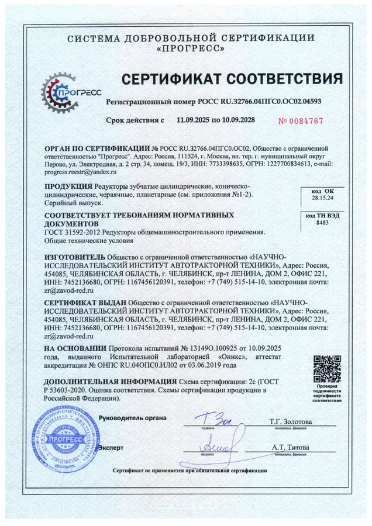
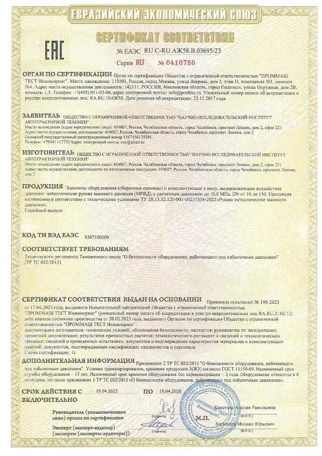
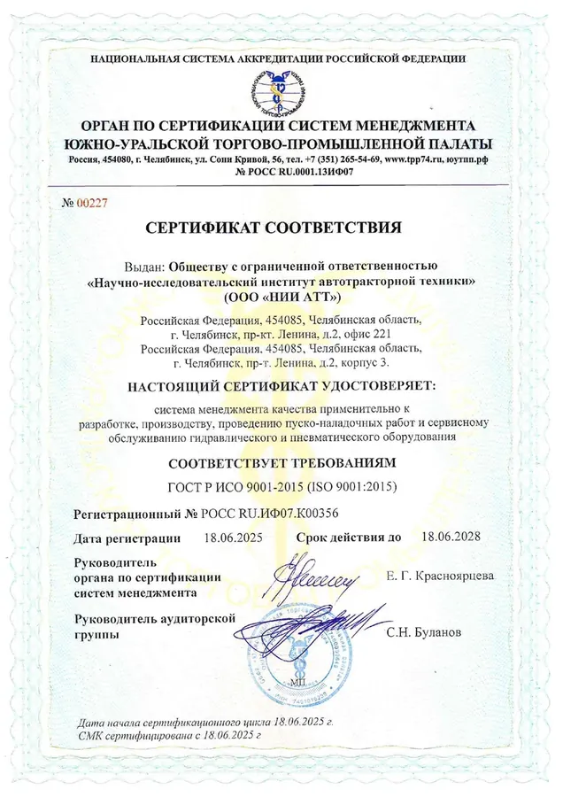

Продукция Завода Редукторов соответствует требованиям и стандартам безопасности. Соответствие подтверждено сертификатом по ГОСТ 31592-2012, декларацией ЕАС и сертификатом системы менеджмента качества.
Официальные документы на ООО «НИИ АТТ». Полные копии предоставляем по запросу вместе с продукцией.



Цементация и высокочастотная закалка — твёрдые зубья при упругой сердцевине, ресурс под нагрузкой.
Шлифовка эвольвентного зуба на серии Ц2У — точность, низкий шум и вибрация.
Вдвое выше среднерыночной. При поломке в гарантийный срок — замена с финансовой ответственностью.
Каждый агрегат проверяется на стенде, в комплект входит паспорт изделия.
Оставьте контакты — пришлём полный пакет документов и рассчитаем подбор редуктора.
Оставить заявку| Паспорт изделия | Технические характеристики, передаточное число и отметка о приёмке; входит в комплект каждого агрегата. |
|---|---|
| Декларация соответствия ЕАС | Подтверждает соответствие требованиям Таможенного союза для обращения продукции на рынке ЕАЭС. |
| Сертификат соответствия ГОСТ 31592-2012 | Подтверждает соответствие редукторов общемашиностроительного применения требованиям стандарта. |
| Гарантийный талон | Фиксирует гарантийный срок 24 месяца и условия замены при выходе изделия из строя. |
| Отгрузочные документы | Накладные и упаковочный лист — подтверждают комплектность и состав поставки. |
| Входной контроль материала | Проверка марки и качества легированной стали перед запуском в производство. |
|---|---|
| Контроль размеров | Проверка геометрии деталей и точности зубчатого зацепления. |
| Твёрдость зубьев | Замер твёрдости после цементации и высокочастотной закалки — 56–62 HRC. |
| Обкатка на стенде | Испытание каждого агрегата под нагрузкой, контроль шума и вибрации. |
| Финальная проверка | Проверка комплектности и оформление паспорта изделия перед отгрузкой. |
Редукторы соответствуют ГОСТ 31592-2012 — на продукцию оформлен сертификат соответствия. Дополнительно действует декларация соответствия ЕАС (Таможенного союза) и сертификат системы менеджмента качества. Все документы оформлены на производителя ООО «НИИ АТТ».
Да, паспорт изделия входит в комплект поставки каждого агрегата. В нём указаны технические характеристики, передаточное число и данные о приёмке. Копии сертификатов и деклараций предоставляем по запросу вместе с продукцией.
Контроль ведётся на каждом этапе: проверка геометрии и зацепления зубчатых пар, контроль твёрдости после термообработки, испытание каждого агрегата на стенде перед отгрузкой. Это подтверждается сертификатом системы менеджмента качества.
Гарантия составляет 24 месяца — это вдвое выше среднерыночного срока. При выходе изделия из строя в гарантийный период мы производим замену с финансовой ответственностью со своей стороны.
Зубчатые колёса изготавливаются из легированных сталей. Зубья проходят цементацию и высокочастотную закалку до твёрдости 56–62 HRC при упругой сердцевине. Такое сочетание обеспечивает износостойкость и ресурс под нагрузкой.
Да. Вместе с продукцией предоставляем паспорт изделия, а по запросу — копии сертификата соответствия ГОСТ 31592-2012 и декларации ЕАС. Это позволяет подтвердить соответствие при приёмке и входном контроле.
Сертификат соответствия по ГОСТ 31592-2012 распространяется на редукторы общемашиностроительного применения нашего производства. По конкретной модели подберём и пришлём нужный пакет документов — сообщите типоразмер.
Для участия в тендере мы предоставляем полный пакет документов: сертификат соответствия, декларацию ЕАС, сертификат системы менеджмента качества и паспорта изделий. Оставьте заявку — подготовим документы под требования закупки.
Сертификат на редуктор — подтверждение того, что продукция соответствует ГОСТ 31592-2012 и требованиям безопасности. Завод Редукторов гарантирует качество редукторов на каждом этапе производства: от выбора легированной стали до испытаний на стенде перед отгрузкой.
Качество редукторов начинается с конструкции и материалов. Зубчатые колёса изготавливаются из легированных сталей с цементацией и высокочастотной закалкой зубьев до 56–62 HRC — это обеспечивает износостойкость, низкий уровень шума и ресурс под нагрузкой. Соответствие продукции по ГОСТ подтверждено сертификатом соответствия, декларацией ЕАС и сертификатом системы менеджмента качества, оформленными на ООО «НИИ АТТ».
На каждый агрегат оформляется паспорт изделия, а перед отгрузкой проводится стендовое испытание. Гарантия на редукторы составляет 24 месяца. Полный пакет документов — сертификат на редуктор, декларацию и паспорта — предоставляем по запросу, в том числе для участия в тендерах и закупках.
Подберите подходящую модель в каталоге редукторов, воспользуйтесь автоматическим подбором редуктора под вашу задачу или узнайте больше о производстве на странице о заводе.